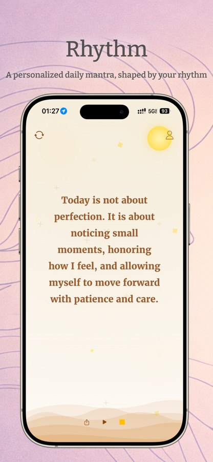

FEATURED PROJECT
Alynna
A mindfulness app connecting daily rhythm, sense of place, and personal reflection.
Developed in Prof. Bo Zhao’s Humanistic GIS lab at the University of Washington.
My role: SwiftUI front end, Firebase database, and App Store submission and iteration.
